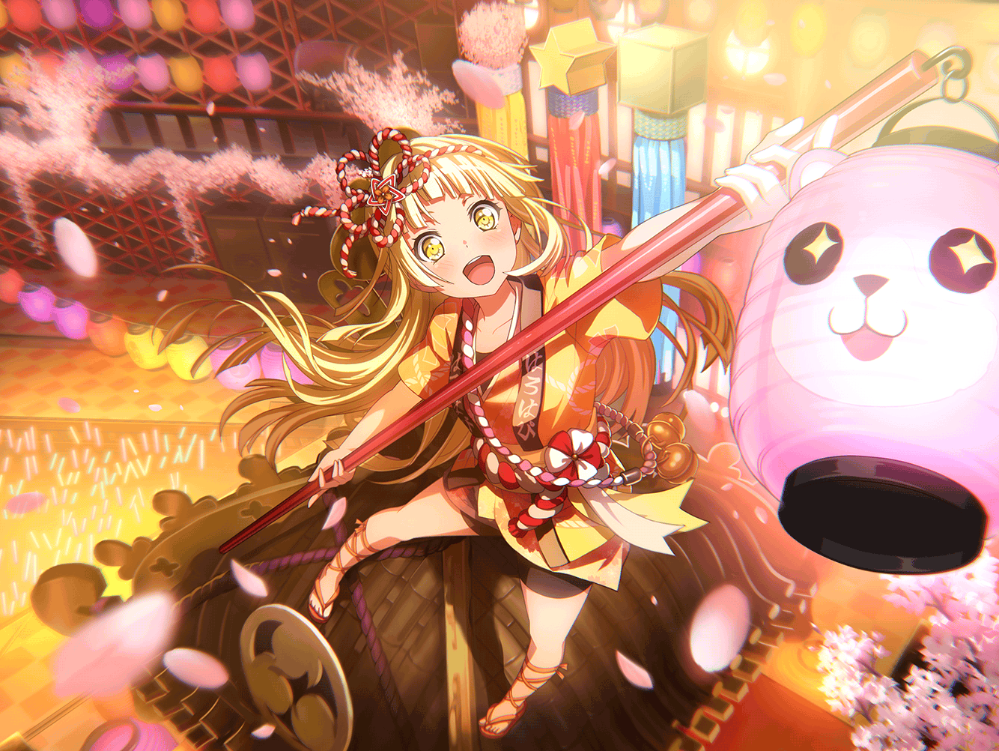

こころ
あ！ 今日はあなた、スタジオにいたのね！
いいところで会えたわ！
こころ
とってもあたし、話がしたい気分だったの！
こころ
実はこの前、みんなでお花見をしたの！
こころ
みんなでお花見なんて初めてだったから、
とても貴重な体験だったわ！
こころ
桜を見ておしゃべりするだけなんて、
どんなものかと思っていたけれど、
実際にやってみるとなかなか楽しいものね！
こころ
それにみんなと一緒だったから、
余計に楽しかったのかもしれないわね！
こころ
人が集まれば、それだけ笑顔の数も増えるじゃない
こころ
笑顔は笑顔を呼ぶの！
こころ
そしたらそのうち世界中のみんなも笑顔になるわ！
こころ
だから、あたしは言い続けようと思うの。
世界中の人達も、みんなでお花見をしましょうって！
こころ
それにしてもきれいなものを見ているだけで、
自然と笑顔になれるなんて、
とても不思議で新鮮な感覚だったわ！
こころ
人を笑顔にするには、ああいう方法もあるのね！
勉強になったわ！
こころ
まだまだ私の知らない楽しいことが、
世の中にはきっとたくさんあるのね！
こころ
お花見以外の楽しいこともみんなと一緒にできたら、
きっとステキだと思うの！
こころ
夏はやっぱり海ね！
ウチのビーチにみんなを招待しようと思ってるわ！
こころ
秋には紅葉狩りっていうイベントがあるってはぐみに聞いたの。
やったことはないけど、狩りの経験はあるし、
あたし、ものすごく得意な気がしてるわ！
こころ
冬になったら雪合戦もいいわね！
雪合戦なら、きっとウチのバンドが一番ね！
こころ
想像しただけで、だんだん興奮してきたわ！
こころ
よかったら、今からあたしと雪合戦でもどうかしら？
こころ
雪なら、きっとあの人たちに頼めば、なんとかしてくれるわ！
こころ
あ、そういえばあたし、お花見っていうのは、
雪合戦と同じような遊びだと思ってたの
こころ
チーム対抗で花びらを投げてぶつけ合う、みたいな感じよ！
こころ
みんなとのお花見の前に、少しはぐみとやってみたのだけれど、
それはそれで、とっても楽しかったわ！
こころ
美咲はそれはお花見じゃないって言ってたけれど……
こころ
でもあたしはあれも一つのお花見の形式だと思うの！
こころ
だから、あたし考えたの！
こころ
あたしの考えたお花見と、この前のお花見を融合させれば、
もっと楽しいお花見が出来るんじゃないかって！
こころ
みんなでお花見をしながら、
もう少しアクションの要素を加えるアイディア！
こころ
あのお花見にアクション要素も加われば、
よりいっそうお花見が楽しくなること間違いないわ！
こころ
それで、あたしの考えた新しいお花見はこうよ！
こころ
この前のようにみんなでおしゃべりしながら、
目の前に落ちてくる花びらをキャッチするの！
こころ
もちろん、花びらを多くキャッチしたチームが勝ちよ！
こころ
でもそれだけじゃ面白味がないから、
ときおり紙吹雪を混ぜたらいいと思うの！
紙吹雪を取ったチームはもちろん減点よ！
こころ
我ながら素晴らしいアイディアだわ！
来年は、この形式でお花見をしましょう！
こころ
どうかしらこのアイディア！
あぁ、考えただけでワクワクしてきたわ！
こころ
……けど、もっと楽しいお花見の形式はないかしら。
それこそ、世界が笑顔になるくらいの楽しいお花見……
こころ
……そうだわ！
もしかしたら他にも斬新なお花見のアイディアを
持っている人がいるかもしれない！
こころ
そうと決まれば、
今からハロー、ハッピーワールド！ のメンバーで集まって、
新しいお花見の作戦会議をしなくちゃいけないわね！
こころ
その後で香澄達にも声をかけて、
彼女達からもアイディアを出してもらうの！
こころ
みんなで考えた新しいお花見をみんなで楽しむ！
考えただけでワクワクしてくるわね！
こころ
来年のためにも、早く準備をしなくちゃいけないわよね！
うーん、忙しくなってきたわ！
こころ
……そうだ！
あなたも新しいお花見を考えてくれないかしら？
こころ
それでもっと素晴らしいお花見を一緒に楽しみましょう！